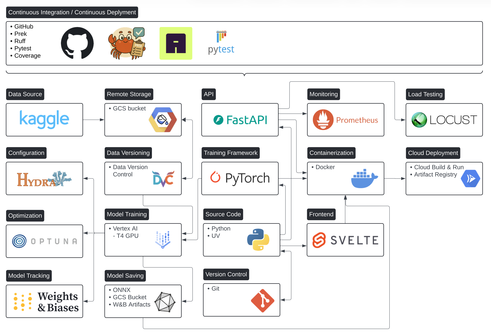

Drone Detector MLOps¶
A production-ready drone detection framework with modern MLOps practices
Detect drones in images using deep learning, powered by a fully automated ML pipeline with cloud training, model versioning, and scalable API deployment.
Feature Highlights¶
-
Cloud Training on Vertex AI
Train models at scale on Google Cloud with NVIDIA T4 GPUs. Automatic container builds and job submission with a single command.
-
Serverless API Deployment
Deploy the trained models to Cloud Run with ONNX Runtime for optimized CPU inference. Auto-scaling and zero cold starts.
-
Data Versioning with DVC
Track and version the datasets with DVC backed by Google Cloud Storage. Reproducible experiments every time.
-
GitHub Actions CI/CD
Automated pipelines for testing, linting, building, and deployment. Branch protection ensures quality code reaches production.
Why This Project?¶
Production-Ready MLOps
This project demonstrates how to build a complete ML system from data to deployment, following industry best practices:
- Reproducibility: Every experiment can be reproduced with versioned data, code, and configurations
- Automation: From training to deployment, everything is automated via CI/CD
- Scalability: Train on cloud GPUs, serve on auto-scaling infrastructure
- Observability: Monitor model performance and detect data drift in production
For ML Engineers
Learn how to structure ML projects for production, implement proper data versioning, and deploy models at scale.
For Students
A comprehensive example of MLOps practices taught in university courses, with real-world cloud infrastructure.
Architecture Overview¶

Multi-Region Setup - A Pragmatic Choice
We use a multi-region setup across two GCP regions:
- Storage & Registry:
europe-north2(Finland) - Minimal latency for uploads - Compute (Vertex AI):
europe-west4(Netherlands) - NVIDIA T4 GPU availability
This wasn't a planned architecture decision but a pragmatic response to GPU availability constraints. T4 GPUs were often unavailable in our primary region, so we deployed compute resources where capacity was available while keeping storage close to our team.
Quick Start¶
Prerequisites¶
Requirements
- Python 3.12+
- uv package manager
- Google Cloud SDK (for cloud features)
- Docker (for containerized deployment)
GCP Access Required
To use any cloud features (training, deployment, data access), you must be granted permissions to the GCP project first.
New team members should:
- Add your email to
src/drone_detector_mlops/permissions/cloud_members.txt - Request a project admin to run the permission setup scripts
- Authenticate with
gcloud auth login
Without proper IAM roles, you won't be able to access GCS buckets, submit Vertex AI jobs, or deploy to Cloud Run.
Installation¶
# Clone the repository
git clone https://github.com/dtu-mlops/drone-detection-mlops.git
cd drone_detector_mlops
# Install dependencies with uv
uv sync
# Set up pre-commit hooks
uv run pre-commit install
# Pull data with DVC
dvc pull
Local Training¶
Cloud Training¶
# Build the training container
invoke cloud-build-train
# Submit a training job to Vertex AI
invoke cloud-train --epochs 50
API Deployment¶
# Build the API container
uv run invoke cloud-build-api
# Deploy to Cloud Run
uv run invoke deploy-api
Project Structure¶
drone-detector-mlops/
├── src/drone_detector_mlops/ # Main package
│ ├── data/ # Dataloader & augmentations
│ ├── workflows/ # Training & testing
│ ├── api/ # FastAPI service
│ │ ├── main.py # API endpoints & drift monitoring
│ │ ├── inference.py # ONNX model inference
│ │ └── schemas.py # Request/response models
│ ├── monitoring/ # Drift detection & feature extraction
│ ├── utils/ # Storage, settings, and logging
│ ├── permissions/ # Access definitions for members
│ └── model.py # ResNet18 model
├── tests/ # Unit & load tests
├── configs/ # Hydra configurations
├── data/ # Local dataset (drone/, bird/, splits/)
├── models/ # Trained model (.pth)
├── cloud/ # Cloud Build & deployment configs
├── dockerfiles/ # Training, API, frontend containers
├── frontend/ # SvelteKit web UI
├── scripts/ # Executable scripts
├── reports/ # Project report & figures
├── .github/workflows/ # CI/CD pipelines
├── docs/ # Documentation (MkDocs)
├── tasks.py # Invoke automation tasks
└── pyproject.toml # Dependencies
Quick Links¶
-
API Reference
Auto-generated documentation from docstrings.
-
Cloud Training
Train models on Vertex AI with GPU acceleration.
-
Deployment
Deploy your API to Cloud Run.
-
Monitoring
Monitor model performance and detect drift.
License¶
This project is developed as part of the DTU MLOps course.